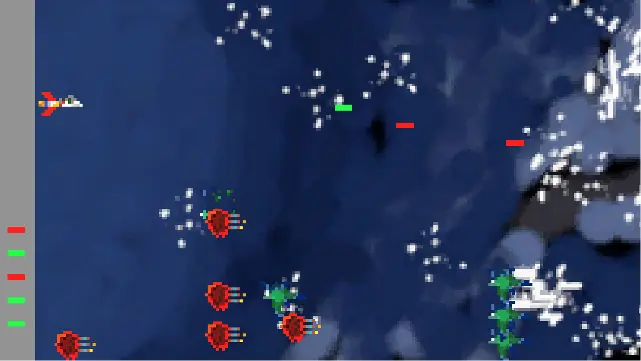
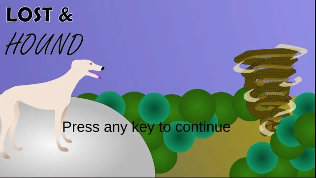
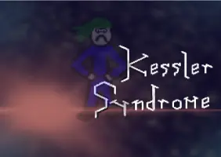

Game Jams
Two Clear the Skies (2022)
After surviving previous Game Jam Classics Kessler Syndrome and Lost and Hound, Lt. Com. Naeta and his trusty dog Naeta take to the skies to defend earth. But some enemies can only be beaten by red bombs and some by green lasers. Don't let them get past you!
Lost and Hound (2021)
You are a dog named Naeta. You have been swept away by a tornado, away from your loving dog parent. Fight your way through a vicious forest filled with rabbits who have a terrifying secret, in order to reunite yourself with your parent. Arrow keys to move. E to bite. Spacebar to sprint Ctrl to dodge backwards.
Kessler Syndrome (2020)
The MSS ship thrusters are offline and waiting for repair parts on the supply shuttle. Our astronaut, acting commander Naeta, is on the MSS alone waiting for the replacement crew. A defunct Russian satellite has collided with and destroyed a functioning U.S. Iridium commercial satellite. The collision added more than 2,000 pieces of trackable debris to the inventory of space junk and is headed towards the MSS. Your mission is to repair the MSS damage from the floating debris and keep the MSS operational until the supply ship arrives.